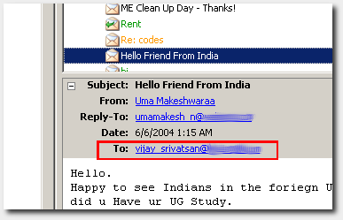

The following answers some bordering-on-annoyingly-frequent questions I get asked about graduate school.
Q. Hey, shouldn't you be answering my questions personally? What's with this directing me to a website nonsense?
A. Listen carefully impudent one, I am a busy man. OK, probably not, but let's say I am. For the longest time (a year and eight months or so if you're curious to know) I carefully read each and every such e-mail sent to me, and responded as helpfully as I could. I did it like it was some karmic duty or some such, and now I think I've done enough of that. It's not like you guys (or the occasional woman) take the time to mail me personally do you? You write one generic "tell me about funding" e-mail and mail it to any address you get your hands on. I am just one such random e-mail address. I don't quite see how you can expect a personal reply.
And to make things worse, after I put in substantial effort and time to give you an informed reply (since I know the last thing you need at this point of time in your life is discouraging/clueless information) I probably receive, on average, just one pleasant thank-you note in fifteen or so replies.
Now, I don't think that's enough to keep anyone motivated, do you?
Q. Your attitude scares me. Could you please give me e-mail ids of other graduate students doing an MS in IE or MECH? (Or MSE or AERO or ... it doesn't really matter.)
A. I'm not so sure other people will be OK with me giving out their addresses. People who are willing to be contacted would have put up contact details in easy-enough to find places. I suppose, since you found mine, you can find theirs as well.
Q. Your web site gave me a lot of insight into applying to umich. I have found two professors in the <insert lab here> who are working in the field of my interest, <Prof 1> and <Prof 2>. Can you tell me in detail about these profs, because I'm planning to contact them individually (don't want to make any mistake).
Better if you could tell me which prof is more accessible and have good funds to support students, or if any other prof you might know working in <insert similar field here>.
A. Sorry, can't help you.
And yes, this includes anything else along these lines as well.
Q. Hi. I just wanted to know about the field in which you are working. Are you working towards an MS or a PhD? Moreover, how many years senior are you to me? Have you already decided your faculty guide to work under for your thesis?
A. I'm working on my PhD in mechanical engineering and scientific computing. I'd finished my MS in mechanical engineering toward the end of 2003, and am now also contemplating an MS in mathematics. My field of interest and work is continuum mechanics, and my area of application is the mechanics of growing biological tissue. I am mostly a theoretical applied-math-physics type, who does very little "real engineering" or hands-on work.
I arrived here in the fall of 2002, so I guess that would make me 3 years your senior. I have had a faculty guide (actually more than one) to work under since the middle of my first term here. I have a web site with some random information, as well as a potentially-useful graduate school FAQ, mostly pertaining to international students from my part of the world.
Tell me a bit about you—What are your areas of interest, for instance?
Q. Hello, I am ABCD from Chennai. I came to know about you while I was browsing the University of Michigan web site. I am currently working at the mechanical engineering department of a college here.
I need some help from you. Some of my students are interested in pursuing higher studies in the USA. I would like to collect some details regarding admission procedures, GRE/TOEFL requirements, aid and so on. Being a senior, you will be well aware of the difficulties in applying to the universities and I hope you can enlighten me as well in these aspects.
A. It's nice to know that you are going through the trouble of finding out information for your students.
In general, the application process is quite a long one. Most people, including me, do it about a year before they finish their B.E. i.e. For admission in Fall (which is the major semester here, starting in September), I had finished my application process by the previous December–January.
There are some general steps involved, and I'll try to list them out to the best of my memory. Firstly, the academics of the student is quite important. So, they have to make sure they work towards their end semester examinations and score as well as they can, and get a good rank in class. This is easily the best way to get admission into a good university. This also, I assume, increases the chances of financial assistantship: aid. Some time in their third year, by at least a month or two before their December deadlines for applications, they should have taken two general tests, the GRE, and the TOEFL. Both of these are administered by an organisation called ETS and they will help you with any more information you need regarding the costs and syllabi. These tests are not hard, but people in general do very well so one has to work hard to be among the higher percentile to again increase their chances of getting into a good university.
After these tests have been taken, the student should then attempt to figure out where they stand, by considering their academics, paper publications, scores in these tests and so on to decide what 'level' of colleges to apply. There is a vast gradation in the quality of the universities from Massachusetts Institute of Technology, Stanford University, University of Michigan, University of California, Berkeley etc., down to smaller and colleges. For this, ranking schemes such as USNews might be helpful, however, they are not always very reliable, but in general accepted. (Probably as important as the "India Today" magazine's ranking of Indian colleges; it's not a very big deal). (My personal opinion is that continuing education here in a small university—and spending a lot of money in the process—is not worth it. It would be more beneficial to take the GATE or the IISc entrance examination and pursue higher education at IISc/IIT.)
Once they decide where they want to apply, based on whatever criteria, including closeness to relatives or friends/seniors if they have some at any place, they should then attempt to look up these universities' web sites and find out deadlines for applications. Most of the forms are 'online.' But there needs to be a lot of paperwork that has to be sent via mail/courier. This paperwork includes transcripts of university exam marks which can be obtained from the University of Madras (or, now, Anna University) for a fee. Every university requires a different number of transcripts of marks. The students should also approach teachers who have had the chance to observe them closely to write letters of recommendation. They should also start thinking about their statement of purpose, a document in which they express why they would want to study what they want to study at that University. All of this work is not trivial. It takes a lot of time and thought.
Once all of this ready, they can send these to supplement their online applications. Then, they wait for the decision process. This can be anywhere from a few weeks to a few months. In this time, they can do further 'research' from web sites and contact people at the university to determine the economic situation there. Some are better off than others, which we will know only if we ask.
Once the results have come, they choose one out of their acceptances based on various criteria such as the quality of the education or the costs involved. It is possible, but not easy, to get admission with aid before leaving the country. Once they decide where they want to go, they can then begin to mail professors whose work they find interesting or closely matches what they know. During this period, they have to apply for a US visa, which requires some paperwork from the university. They also have to be able to show the ability to fund themselves for a period (say a year) in case they do not get financial support from the universities.
Once all this is done and finalized, they should be ready to leave to study further.
Whatever I've said above are just small paragraphs describing long procedures. Your students can attempt to contact their peers or students in other colleges attempting to apply to the US for education to get more current information.
I hope I was of some help.
Q. Hi Harish! I want your advice on something. There's a good Media Studies PhD program at Ann Arbor that I'm thinking I might apply to. What's the general protocol while applying for PhD at Ann Arbor? Do you contact specific professors about the research they do? That sort of thing? I'm kinda at a loss right now, I feel I should probably do more than just send in my application, but I'm not sure what. Should I just send e-mails to people saying "I'm so & so and I really want to do research here" :)? I'm very confused and unsure, so I was just wondering what your thoughts on this are to help me gain some clarity. Thanks!
A. Cool, I actually found time to think about this a bit before I hit the reply button.
Honestly, I feel it'd be very cool if you were studying here, so any (terribly insightful ;)) information that follows will be clouded, at least a tad. With that little disclaimer out of the way, here it is.
Firstly, a PhD involves a lot more time and work than I had imagined. Not that I am anywhere close to being done to make such a statement, but seeing people around me spending a considerable portion of their life working on some highly specific thing makes you realize it's like this big commitment.
(Anecdotal tangent. I mocked my undergrad teachers when they said we'll be adding "we feel he's ready for the ardours of PhD research" or something similar to my recommendation letters. I am now beginning to realize what that meant, and the benefits of such a line being there.)
I just realized another disclaimer is in order. Nothing I say here is because I feel you didn't know it already. Just reiterating, because, umm... I like to type?
I guess what I am trying to say is, you will be spending a long time working in your little zone. You have to make sure you really really find that space comfortable, and fun.
Which brings me to what you do (or 'normal person' does, or I did, or I thought I should have done) before you apply. Great media studies program or not, try to read up as much about what they are really doing. In the sense of what kinds of sub areas the professors work on. I am not really sure how detailed their departmental web sites and so on are, but use what's available.
Once you have this in your head, you try to fit it with what you imagine you'd like to do. Remembering of course, that you will be doing it for a while. I guess the people themselves are important too, but that's not the kind of things one judges based on their web sites, unless you're me :).
Once you've found that certain grade of work that's right up your alley, I feel your application will show it. I honestly do. I felt it when I submitted my application, and decided not to bother with mailing the individual professors, as my application itself was sort of geared to them. (Not to mention I (a) was (and am) insanely lazy (b) handled way too many apps in 3 weeks and didn't really have the time to come up with detailed personalized query communication.)
It will totally not hurt if you mail them and express interest, too. Like I said, once you mean it, the rest will follow through. Do as much homework and ground work as you can. If you feel you need more info, mail individual people. (They might not reply. They are not mean, just busy.) Once you find out what you really want, let them know (again) yourself, or your app will.
They must be used to receiving tons of "I love what you do, I'd love to work with you, support me." e-mails. So at worst, they might not immediately trust you when another shows up, but won't be like a negative thing. If you've done some stuff in your undergrad closely related (or even remotely related), let them know, they might be interested. Or impressed. Either way, it's all good.
Reiterating what I've tried to say all along—once you find out what you really want, let them know yourself, if you want to. Either way, your application will.
Good luck!
Q. Dear Harish Narayanan, let me start by introducing myself, I'm IJKL, a 7th semseter mechanical engineering student at <university>. I must say on the onset that I found your grad school FAQ very informative and interesting. Well, the reason I'm mailing you is that I'm keen on pursuing my higher studies at umich and I had a few questions I was doubtful about:
A. I am glad my FAQ helped. Whatever you finally choose to do, let me just say that pursuing higher studies is a always a good plan. As for your questions:
After I replied, this kid then followed up with:
Q. Dear Harish, Thank you for the prompt reply. Your words really cleared my head up quite a bit.
To tell you the truth, I was in a tussle between working and pursuing higher studies. I don't know if you are aware, but right now in India, IT's like a monster here and companies such as Infosys, Wipro, and so on, are on massive hiring sprees to meet their demand. Their manpower requirements are so high that they even select people from branches other than computer engineering.
I've gotten into one such company and my parents want me to stick on to it (even though I have absolutely no such skills). I guess you're right, mechanical engineering was something that I consciously did not choose, but now after four years of slogging it out, I don't quite want to give up on it just yet.
Thanks for the advice on choice of subject also; a few people here said that choosing something in nanotech would be easy to obtain funding for, and so I was baised towards it. I guess I'll have to rethink that.
Is there a site which offers a an aerial view of the various areas of ME? If you do come across something, please pass it on. Thanks again for the advice.
A. I sort of realized you seem to be unsure about what you really want. Take some time to carefully think about it, whether it be one of these IT jobs, further studies (in whatever subfields), or even whether it is engineering you really want to do. It is one thing to appease parents or society or make money, it is another to be happy or getting a sense of contentment from what you do.
Not too many people are "genuinely passionate" about very complex subareas when they first start off. If you'd said something like, "I like physics" or "I like thermodynamics" even, I would have figured you really knew what you were looking for. Somehow, you saying "nanotech" set-off an alarm.
I don't know a site of the kind you're asking for. I think this is more of a personal journey. Somewhere, deep down, you know what you want to learn and do for a living. Honestly, at least the way it is set up over here, choices are innumerable. If you really want to learn something, you can. So all you really need to do (it is harder than it sounds), is to figure out what you want, as opposed to what is offered. Once you're doing what you enjoy (and are quite probably good at), finding financial support or a job later won't be a problem. This is almost by definition, as you are more skilled at certain things than others because you genuinely care about them.
I hope you find what you're looking for.
Q. Hey, how is mechanical at umich? It looks like it is going to be trying, but I wanted to make sure. Secondly, is there a list of books that I can procure here and carry along, or is that completely course dependent? Thirdly, any particular academic-related material that I may have to carry along? Fourthly, is it really that hard to get an F1?
More doubts when I can verbalize them, thanks for helping out. :)
A. For starters, mechanical engineering is one of the largest departments at the uni, so there are many people doing a lot of cutting edge things in varying areas. Which means, there is ample opportunity for you to find something right up your alley—which is cool.
By 'trying', if you're referring to things in terms of coursework, I would say 'not really.' I mean, there are the occasional classes which could be considered 'hard,' but you have so much choice, you wouldn't really take a class unless you liked it, and if you like it, you're bound to be good at it. So no, it's not really trying at all—it's fun.
The question about the books is really hard to answer. In the same vein as what I just said, there are a ton of classes offered and a ton of choices, so it is hard for me to come up with this one 'magic set of books' that you must own. (Read the answer to this question.) If you're so inclined, you could decide on your classes now, and try contacting the professor who's offering the class for input on what textbooks and such (s)he expects you to own. Your mileage will vary, of course.
With regards to academic-related material in general, I'm sure you have a few cool books/notes from school/undergrad which you love (we all do). You know, the set you keep going back to, to make sure you understand what's going on—no matter what you're 'really' supposed to be using for a course? Bring those along. They will serve you well. If not anything else, it's good to curl up with them at times.
And finally, about the F1, no. I was in the first batch post September 11, 2001, so we were scrutinized more than most, and things weren't pretty for a lot of people. Things have calmed down since then, and besides, once they realize you've gotten into a decent uni, and are serious about studying, there should be no problems at all. Just be sure to carry all required supporting documents and be clear when you're asked to show/answer something. It will be fine.
The whole grad-school-thing is definitely going to be a most fun and educative experience.
Good luck.
Q. Dear Mr. Narayanan, I'm studying my B.E in Manufacturing Engineering at the <college>. I'm looking to do my M.S in the States.
I believe that the University of Michigan is ranked pretty high for engineering, plus my cousin sister is doing her Ph.D in Architecture there so I thought I'd try getting into U of M.
I'd be really grateful if you can give me details on how easy/difficult it is to get into U of M and the basic requisites like CGPA, GRE score, Papers presented etc. Thanks once again.
A. Hello, it is nice to know you are interested in studying further. The University of Michigan ends up falling between 2 and 4 in terms of most national mechanical engineering rankings, so I do assume it will have a similarly highly ranked manufacturing program. I'd also like to say it is a very good (and challenging) place to continue your studies, so you should try here.
I would say the admissions requirements aren't so much easy or hard, as they are fair. If you have decent academics (top few in your class), a good (not necessarily stellar) GRE score, a clear statement of purpose and convincing letters of recommendation, you will be fine.
Funding however, is a different story.
Q. My name is ASDF. I am from <insert college or university name here>. I'm doing my B.E in mechanical engineering. I am very interested in doing MS in industrial engineering or MS in mechanical engineering. I was hoping I might try out and apply for umich. Got you e-mail id from your homepage. I had taken my GRE some time back and I secured 14xx/1600. My split is (verbal-7xx,quants-7xx) and written score of 5.x/6. I will be writing my TOEFL in a few weeks time. My academics are around 8x% and I'm 3rd rank in class. I am doing my project on <insert project title here>. If it isn't too much trouble, can you give me info on my chances of making it into umich? Also I would be grateful if you could tell me whether aid will be given for the course after I get there.
A. I am not familiar with the "new" GRE pattern but I assume that is a decent enough score. I pretty much had similar academics and class standing so that's a good thing.
This is a very good place to continue your studies and I assume (since you have pretty similar credentials to what I had) you have a good chance of getting in. The only trouble is, apart from being a very good place, it is also a very expensive place and financial assistantship and so on is a lot harder to come by than getting an admission. You have to be willing to take a bit of a risk, but I will say it is worth it. I'd suggest you first make up your mind on what you really want to specialize in. Not being clear as to whether you really want to do mechanical engineering or industrial engineering, and deciding between the two just based on which has a higher probability of aid is not a smart way of doing things.
Once you're sure of what you want to do, it will be made clear in your application (you would have done (probably) better in those subjects, your SOP will show what you are really interested in and so on). Then the rest, aid and other things, will automatically happen.
Q. Should I apply for an MS or a PhD? If I do an MS, how is the US job scene after I finish? How is it after my MS-PhD?
A. This is a very important decision, and you will not be being too bright if you decide this based on a 'job scene.' If you are interested in something and are willing to devote a few years to do in-depth work on it, I'd suggest a PhD. If your primary aim is to start working as fast as possible, I'd suggest the MS. Otherwise, I am quite sure you will be quite miserable. There is almost no real-world difference in your application process, and your first year of grad school, as even if you are planning on staying on for a PhD, you will have to satisfy all the coursework requirements a master's student goes through.
Q. Hi! I am ASDF. Remember me? My GRE score is 14xx/1600 and academics are 8x%. I mailed you sometime back asking you information about your college. I have more or less decided my applications. My high applications are Gatech, UIUC, Purdue, TAMU and UTA. I need your help badly to decide my medium and safe applications. Can you please name a few medium and safe applications where the fees isn't too high and I stand a good chance to be admitted for an MS in mechanical engineering?
A. That sounds like a decent GRE score, but I can't be sure, since like I said earlier, I didn't take the test with the new format. Anyway, it is perfectly fine, the test scores are not terribly important. Your academics are about as good as can be expected from your university set up.
I am not the right person to ask this question. I did not classify my applications as high, medium or low. (I just thought about it, because when I applied, the UTs: UTA and TAMU, if they could be classified, were mid-level schools in my head.) All my applications were for "top" schools. I didn't see the point in applying lower, because having, say three, medium admits and many low admits and one top admit, I would have still chosen the one top admit without too much thought.
My applications themselves were basically the “top 12” or so without MIT and Stanford (I obviously don't deal with rejection very well). Which is a mistake, because now I sometimes wonder, what if?
So I'd suggest you just try for the higher ones and don't bother with the smaller places. Of course, it will be smarter if you ask someone else who has more insight on this issue.
Q. Hi, my name is ABCD and I am thinking about applying to grad school. I am an undergraduate now and want to withdraw from one of my classes: <insert some class here>. I was wondering if you think that graduate schools look down on that, or would expect a good explanation for dropping a class? Could dropping a class affect my chances of getting in?
A. I'm sorry it took me a while to reply. I've been asking a few people to come up with some sort of consensus. There isn't a real clear-cut answer to your question I am afraid.
Firstly, this sort of thing will tend to be more important if <insert same class here> is pertinent to the kind of specialization you wish to pursue in grad school. Conversely, it shouldn't matter as much if it is not directly relevant to the kinds of things you're aiming to do in grad school.
And secondly, some schools request that you explain things that are "out of the ordinary" concerning your academic scores or standardized tests along with your application. So I assume you must be prepared to give them a valid reason, if asked for one.
Q. Finances. Like everybody else out there, I'm worried about money. This is all I really came here to read, so please don't beat around the bush. Could you, briefly, give me an idea about:
A. Sure, briefly you want? Briefly you get.
Q. Did you make aid after you got there?
A. Yes.
Q. I am a student of <insert college or university name here> and have just been admitted into the MS leading to PhD program at umich. I was not offered any aid. Can you please tell me how the funding scenario in mech dept is? Can I expect aid at least after first sem? My area of interest is CFD. I will be really glad if you can mention some good profs working in CFD & numerical methods.
A. This seems to be standard procedure in this department. They offer admission to more people than they are able to support initially. Since you are on a program leading to a PhD, the chances of you getting support are higher than those attempting to get an MS. I would say your chances of getting supported by the second term are good if you find someone who works in an area you are interested in (and good at).
I don't know of any details regarding people working in CFD, but for now, I would suggest you try to look up professors' web pages and get an idea of what kinds of work that goes on. So you can decide what kinds of things interest you and who to contact.
Q. Hello, I am XYZA in my final year B.Tech. I have been admitted to the doctoral program in mechanical engineering at umich. However the department has not chosen me for an assistantship. I am trying to mail the professors for an RA.
If you could give me information about other funding sources in the University, it would be a great help. Could you suggest any departments offering assistantships that I am eligible to apply for?
A. First, congratulations on the admission. The thing is, last year (2002), the number of admissions to the program was exceptionally large. As a result, there were many people admitted, but only a small fraction with financial support. The situation still remains that way, in the sense that many peers of mine, who joined with me are still currently paying their own tuition.
There aren't too many 'open opportunities' for support, or at least not any that I know of at the moment. Currently the state is such that if news of something like that gets out, the position is filled within a day or so. You could mail the professors instead who obviously have a better idea of what is going on. If they are too busy to reply, which happens, don't get discouraged, and try another.
The only two "real" sources of funding are an RA and a TA. Currently, both are not easy to come by, though not impossible if you try hard enough. There is a good possibility of getting a temporary job. Many do have those. Those will pay for your living and such, but still, the major burden of the $15,000 tuition fees per term remains on you.
Q. Hey it's me, XYZA, again. Thanks for replying. Your reply has given me an idea of the current position. But first, umich has been a long cherished dream. I am not too ready to pass it up so easily. At the same time, coming there without aid may be too much of a financial burden for my parents. Well, as you put it, it is not assured that people get financial aid after their first semester. I'm kind of in a dilemma about the amount of risk it will be to land there with the hope of securing an assistantship in the second semester. Please tell me what you feel.
And, is it possible to transfer to/from some other university to umich after one semester/year ? Are there any new rules against it? Please do let me know of the possibilities
A. I didn't mean the previous reply to make you 'give up' on umich. It is an extremely good place to study in general. I indicated just, that it is not easy to get financial assistantship before you get here and it is a very expensive place, so you have to consider the 'risks' and your parents financial situation of course. That said, I'd say it's worth it.
About the chances of assistantship in the next semester. I'll tell you the facts I do know. I don't guarantee correctness, but this should put things in perspective. There were about 180 or so admissions my incoming year; Indians probably being 35–40? and as far as I know, 3 had made aid by the end of the first semester, that is, covering expenses and tuition for the second semester. Probably 2 or so more can be added to that previous number, but they'd shifted to other departments like aerospace.
And as far as I know, there are no rules regarding shifting universities. However, in all the cases I do know, people came here from smaller schools. With regard to leaving, if I didn't know the person who left, I wouldn't miss them if they did leave, so don't know. There shouldn't be a problem leaving, but I don't think people in general do so. If they find it prohibitively expensive, they tend to finish the course as fast as they can and then leave.
Q. I'd like to ask you a couple of things, and I'd greatly appreciate it if you'd answer them (with a smile):
A. 1. It is fairly easy to get an on-campus job. Definitely a lot easier than most other schools I know. And they pay relatively well. (Read: You can most probably support all your living expenses comfortably with an on-campus job.)
But, as is expected, there is a catch.
2. RAs/TAs are pretty much out of the question before you show up here in person. Unless your performance and work in undergrad is stellar, which few people really can honestly claim to have. For an RA, since you aren't here yet, you read up all the pretty web pages you can find put up by professors and their students, and have a general idea as to what sort of stuff goes on. You, I am sure, know what you want to do as well. So once things seem to match, try to get in touch with them and inform your interest. Of course, they might be busy and not reply and you might end up getting all disappointed, but that is how it goes. Try.
Once you are here, you meet them in person and repeat the same procedure. During this process of "indicating interest" and "showing your capabilities," it might be expected that you do some (relatively simple at first) work under them, or independent research, or just tag along with them to their meetings and see what goes on first hand. Things like that. This is a useful step before you get to officially work for them (usually the next term), and get paid as a result. You get to see how it is to interact and work with them, and they you. A very good thingTM.
Now here is where the catch comes in. Though outside jobs can help you live comfortably, they detract from time you can spend on this (very vital) step. So I wouldn't recommend one though it might be tempting, considering they are relatively easy to come by. Even if you're financially desperate, because if you stop to see the bigger picture, the tuition fees (some 15 grand? per semester) is a huge deal. And having that paid for you is a far more strategic way of achieving said comfortable life.
Needless to say, many newbies screw this up by running behind a library job or some such, and ending up without support for a lot longer time than the more clueful ones who didn't worry about the library job and focused on this. It is not a surety of course, but I've observed this is how things generally go.
For a TA, the "official procedure" is fairly straightforward. I presume you have missed the deadline for the next term, but feel free to ask as I'm not really sure. Contact any of the official contacts in the Academic Services Office (ASO), and they will let you know how this is done. It involves filling up a form saying you are willing to TA such-and-such classes, and give the system some of your academic stats. They will then pool all these applications, and pick the best guy or girl they feel fit for the job.
The caveat in all of this is, the best guy is rarely a newbie. And there are various people who have preference in the system (students promised support by the department, advanced doctoral students aiming to become professors, students who've taken the same course and done very well in the past ....). But there is no harm in trying, of course.
I've been both an RA and a TA, and have also been offered both in one term, so it is all possible. It is just a little complicated before you know what you really want to do, and will clear up in time.
Q. I got to the site where you have answered questions about applying to Umich and getting there. I want some more information from you. Hopefully you can answer my questions.
I have already applied to Umich and am waiting for the decisions to be taken. I am studying in <insert university here> in the <insert department here>. I applied to Material Science and Engineering. Since I was interested in the field of <insert field here> and had done some work on it, I mailed a professor who was also working in the field. He said he does have a position open and has informed the graduate committee, and will let me know when the decisions are taken. I want to know how the aid process works. And how does the fact that I mailed the professor and his reply help me? If you can direct me to someone in the Material Science department also, I would be grateful.
A. As far as you've described, you've done everything right so far and you've already gotten a glimpse as to how the process works. Briefly:
Most of these you already knew, and acted correctly on. I've not really been of much help, since that's pretty much all there is to it.
But, you're welcome.
Q. What are the required credentials for TAs? TOEFL score seems obvious for some language portfolio, but what else?
A. Credentials for TAs are fairly arbitrary. Language skills are not a major concern once they see you. Like I said, there are a bunch of "preferred people" on that list (see earlier answer), and the basis for all of that is fairly complicated. You getting a full on your TOEFL will not have too much of a bearing when the other guy is an advanced student who plans on a career in teaching, say. I guess it can't hurt if you have done an equivalent course (to the one you want to TA) in your undergrad, and did it very well.
Q. Hi, just a couple of questions. I haven't got financial aid, so:
A. 1. You don't need to bring too much in hand. Also, when you are first entering the country, there is a limit as to how much you can bring in (I think it's $10,000, I am not sure) without having to declare it to customs officials. If you plan to bring all of it (the first term's fees and living expenses for a while), you will probably have to explain to them why you're carrying so much money, and besides, I don't think it is safe.
It is easier and safer for you to bring just enough for you to get started (probably a couple of thousand dollars), open a bank account here, and have your parents electronically wire in more money as and when you need it over the first few months.
2. I was just reading up on this. Apparently, there is a possibility of doing this. You have to do some work to find out the details, as I am not familiar with this.
Q. What are my off-campus housing options?
A. I've always lived in an apartment close to campus. As a newbie, your best and easiest bet is to contact the Indian Student Association (ISA). They are very helpful with this sort of thing. You (and a bunch of buddies) can find a place for something like 1000 bucks a month, and share it amongst 3 or 4 people. After you're settled, the following year you can look around and find your own place (alone, or a bunch of buddies) independent of the ISA, or continue-on peacefully where you were originally put up.
Initially, this is easiest thing to do and involves few complications.
As for other availability, you could live in places called coops, but getting into one while still in India might be complicated. As for other sources of information, the ISA's housing page lists some options and the umich off-campus housing page contains more generic information.
Another place where people list openings is in the marketplace.
Q. That answered some stuff. One more thing though, is it easy to live at Detroit and travel to Ann Arbor?, because that's how the plan stands as of now. You have been of great help; looking forward to meeting you when I get there, that is, if I manage to get there.
A. You will get here all well and fine.
I don't think it will be easy living in Detroit and commuting to Ann Arbor to study. Firstly, Detroit is far away and will take about an hour each way. Secondly, once you're working under someone (or even need to hang out with your buddies trying to get some (home)work done or whatever), it will be easiest (and probably only possible) if you're capable of spending late hours at the uni. If you're around and live close by, you can conceivably leave at some obscure hour late at night, and get home soon enough.
I am not so sure how easy all this will be if you have another hour or so of travel on your mind.
But it's not impossible or unheard of. It's just that I honestly feel it will stifle your work, and social, schedule.
Q. Is there a list of textbooks around I can use? I heard textbooks there are quite expensive and that it's better if I could lug some over.
A. Classes are extremely varied. To put things in perspective and tell you how varied they are, a bunch of guys from my class in mechanical engineering back in India came with me here to grad school. I haven't taken single class with any of them. So your books are dependent on what classes you take. If you know which ones you want to do, then you can figure out which book those classes need fairly easily. If nothing else, you can just ask the professors which ones you'll need.
But, figuring out what you want to do in itself is a huge deal. Trust me you'll feel like a kid in a candy store when you're first here.
Q. This whole credit system has me in a few tangles. Could you explain the whole thing? I sort of understood that I have to take at least 12 credits/sem, but how does that make up the 30 credit requirement for the MS?
A. Based on class level, difficulty, amount of work involved etc., you get a certain number of credits for every class you take. For instance, most classes you'd probably take will be 3 or (rarely) 4 credits. In a term, you have to do a certain minimum number of credits to maintain your status as a full-time student. Which is 12, not 9. So assuming it's 3 credits a class, that means in a given term you will be doing at least 3 classes. (There are many complications which I will choose to avoid. For now, this is enough to know.)
For an MS, you need 30 credits to finish. Which is, say, 10 classes. So you usually do 3–4 classes (9–12 credits) a term and finish your MS in about 3 terms. If you're super fast, you do 5 classes ~ 15 credits a term, and finish the 30 credit requirement in 2 terms. If you're slow, you do less credits (and correspondingly, classes) a term, and take more terms to get your MS.
The MS itself isn't time based. As in, you don't HAVE to take a year-and-a-half for your master's. Some people finish in 8 months, others in 2.5 years.
Q. I've applied for the Combustion and Heat Transfer Subplan (a subplan was asked for in the application), however, I'm not too sure if I'm really interested in this, because to tell you the truth, I've not done any real research work here in India to give me an idea of what I'd really like doing. I applied for this solely because the projects I'd done here were related to CFD and biodiesel. Is it possible to land up at umich and then pick courses that would point me toward a career in the auto industry? Could you suggest some courses I could take to this end?
A. The sub-plan you were asked for was only a means to gauge what your interests are. Nothing is set in stone, and you can direct your graduate work and courses in any direction you want. Things are very flexible.
It is very possible to land up here and pick courses related to the auto industry. The page that I link to below has all sorts of information on the kinds of courses offered, and the I've picked one of relevance.
Q. Hello, wish you are in best of your health and spirits. I am fine. I have resigned from my job and am at my home waiting eagerly to reach Michigan. I wanted a few clarifications regarding the following items:
A. 1. I don't remember having to undergo any special vaccinations before getting here. Health insurance is a requirement for the duration that you are here, and you will get it done through a provider associated with the university. It is something that you pay for if you aren't on financial support, but something that gets paid for you if you are. Either way, there were no questions from these companies about what prior vaccinations I had had before agreeing to cover me.
Like you said, that link might have been pertinent to undergrads who were going to be residing in dormitories.
2. Yes, we do pay taxes on what we earn here. I just went through some tax papers of mine. In this country, you end up paying two separate sets of taxes, one to the state and one to the federal government. My taxes seem to total up to about $2000–2500 per annum. Or something like that.
I am not entirely certain I understand it all myself.
3. I work with a diverse set of people, multiple advisers who are specialists in different areas and get to do what I like to do (and am good at) in a field I had no idea I would be involved in before I got here. As you will soon see, the choices available here are simply staggering. To answer your questions however, in a somewhat brief fashion:
"I work on non-linear continuum mechanics as applied to biological tissue and solve resulting partial differential equations pertaining to boundary value problems using numerical methods like FEM on parallel clusters."
I know that probably made little sense. What I do is study the mechanics of growing tissue. I am an applied physics/math person at heart, and the engineering degree is just superficial. With the level of flexibility here, you can do what you want to, and I am doing what I want to. I'm also working on degrees from the mathematics department and the center for advanced computing.
4. Honestly, I have no idea regarding either of those areas as I don't work on or with anyone in related areas. To tell you the truth, these things go in phases. All research in universities and other places depend upon financial support from other organizations. Which means, if there is some sort of thrust for results (meaning some organizations are pumping a lot of money into) in a certain field (say nano, bio, MEMs, whatever), then everybody will eventually jump on the bandwagon and tailor their work to fit with those areas. This is probably the time where nano and MEMS are in the limelight and getting most of the support, so this is probably why you see a large magnitude of people working in these areas. You needn't be scared if you aren't exposed to either of these areas, because what will end up happening is that you will work on what you know and do best, while applying your knowledge to these sorts of fields—whatever the "popular" fields might be.
Q. Hi Harish, I wanted to know whether our BE Project reports are required at any point of time. I have begun packing, and my report is very heavy and voluminous. I thought I should ask before I carried it over.
A. I carried mine along, but only because it was small. I didn't end up needing or using it at any point. If you have a soft copy, and you think you might need it for some reason (say, showing off your work to impress people), just carry it on a disc or whatever. A hard-copy is not necessary.
Q. Hello, sorry to be bothering you again but I hope you remember me. I wrote to you before I got admited to Umich for an MS in Material Science. I wanted a favour from you. Could you tell me how a student from India can see Niagara falls from the Canadian side? I know I have to get a visa, but I heard I need something stamped on my I20 which I need to be able to return.
Can you tell me how it is done and how long it takes? I am reaching Umich on 12th. Cheers!
A. Hey, of course I remember.
Let me explain the basics. Whenever you plan to return to the United States after a holiday, apart from the valid student visa, you also need a valid "travel signature" on your I-20. You require this signature on page 3 of your I-20.
There are details, but long story short, for this signature to be valid, it shouldn't be more than a year old at the time you plan to come back into the U.S. The actual process of sending it to the international center and getting it signed takes about 2 weeks. They will expedite it if it is an emergency, for a fee. The procedure involves filling out a form and sending them your I-20. The basic idea here is that the international center goes through your file as a student and makes sure you are doing all the "right things" ensuring your legal student status (e.g. having a sufficient course-load, have medical insurance, ... ) before signing, allowing your travel—whereby limiting the chance for confusion on reentry. As in, the immigration officer knows for a fact the university is aware of and feels it is OK for you to travel.
I just realized I made it seem more complicated than it is. Whenever you're planning on a holiday, just make sure you get your I-20 signed before you leave, that's basically it.
When do you plan on doing this Canada trip?
Q. i want to know that my admit card has been mistikaly printed as all the suvject in my previous records but i want to give onlymathematic as my subject please make me the corection
Or other things of this nature, such as:
Q. hello sir
my name is obfuscatedforsavingface , my gre is score is 1070 , i did project in automation in step motor and i selected in national level and i got the certificates also , i am having good knowledge,with this score i can get admission in this university , i am from mechanical branch
ok bye sir.
A. Huh? Was there a question somewhere in there? For heaven's sake, please proofread your e-mails before sending them.
(Thank goodness these are not-frequently-asked non-questions. I've put up samples here just to let the outside world know the kinds of things us poor graduate students have to deal with. Here is a related journal entry.)
Q. You seem to have spent so much time preparing this FAQ, wouldn't have been easier for you to just answer my e-mail?
A. No. Can't you see I've just literally copied and pasted previous questions and responses? I tried to maintain some order—the questions start from deciding whether to apply here, and end up with what to do when you're almost here.
Trust me it's a lot less work than typing all this out again, just for you.
Q. You've been of great help and support to me. Why is it that whenever I try to repay the favour by offering to bring you gifts from far off lands, sleep with you, and so on, you always refuse?
A. Let me try to clarify the nature of this relationship. You ask for my my help, I try to help. You aren't obligated to do me any favours. Thank you for the thought though.
That said, now that I think about it, you could do me a favour. If you found anything I've told you useful, or this page of any use, by all means, let all your interested friends know. That way, there is a chance they won't ask me the exact same questions, yet again.
Q. And now for some role reversal. I ask the questions, and you mail me your responses. I am curious about a few things too: